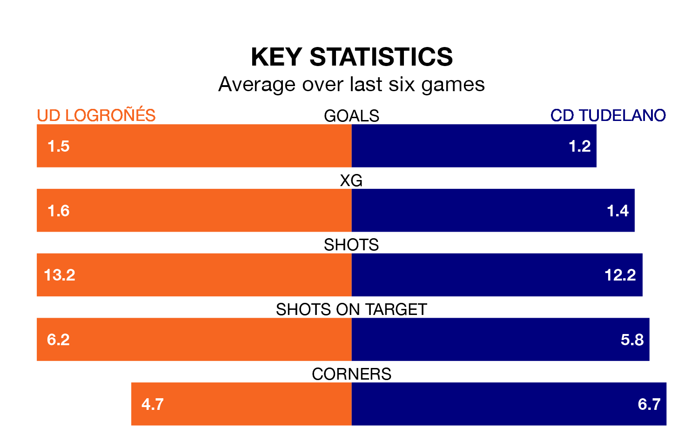

UD Logroñés host CD Tudelano on Sunday at the Estadio Nuevo Municipal Las Gaunas in the Segunda División RFEF Group 2.
In their last league match, on March 24, Logroñés beat CD Calahorra 1-0 away, with their goal scored by Lander Yurrebaso Olazarri.
Tudelano also won, 2-0 at home against Brea, with Joel Rodríguez Satorres scoring their goals.
With 55 goals in 28 games so far this season, Logroñés are the league's highest scorers with 2.0 goals per game. And they are conceding fewer than average, letting in 15 goals at a rate of 0.5 per game.
Tudelano are also above average scorers, with 1.2 goals per game, compared to a league average of 1.1. They have conceded 1.0 goal per game.
The hosts are third in the table after 28 games, of which they have won 15 and drawn 10, earning 55 points.
The away side are five places behind Logroñés in eighth, with nine wins and 11 draws putting them on 38 points.
In the last 10 years, Logroñés and Tudelano have played each other on 11 occasions. Logroñés won five of them, Tudelano one, and they drew five times.
On average, Logroñés scored 1.1 goals and Tudelano 0.5 in those matches.
Their last meeting was on November 19, when they played out a 1-1 draw.
Logroñés are in good form in the Segunda División RFEF Group 2, with four wins and a draw from their last six games.
With two wins and three draws over that period, Tudelano's form is worse – they have taken nine points from 18, compared to the home team's 13.
Updated: 12:16 (UTC), 25/03/24